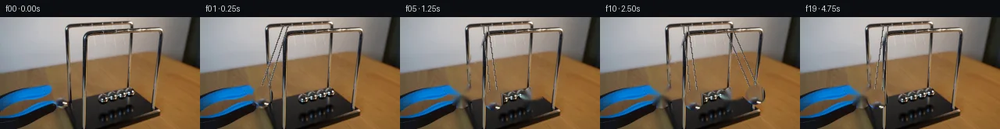

![首帧]()

Round 00
2026-11-05T11:18:39.302562+00:00像素候选变化代码 +214/−0inspection 更新
pixels 890c2b4f42faebd0 · code 21b88859e555e02f
查看本轮 generate.py 真实 diff
--- previous/generate.py +++ current/generate.py @@ -0,0 +1,214 @@ +from pathlib import Path + +import cv2 +import numpy as np +from PIL import Image, ImageDraw + +import artifact_io + + +ROOT = Path(__file__).resolve().parent +W, H = 256, 144 + + +def circular_sprite(image, cx, cy, radius, margin=3): + """Extract a feathered circular photographic sprite.""" + half = radius + margin + rgb = image[cy - half : cy + half + 1, cx - half : cx + half + 1].copy() + yy, xx = np.mgrid[-half : half + 1, -half : half + 1] + dist = np.sqrt(xx * xx + yy * yy) + alpha = np.clip(radius + 0.65 - dist, 0.0, 1.0).astype(np.float32) + return rgb, alpha + + +def paste_sprite(canvas, sprite, alpha, center, scale=1.0): + """Alpha-composite a sprite at a subpixel center.""" + if scale != 1.0: + nw = max(1, round(sprite.shape[1] * scale)) + nh = max(1, round(sprite.shape[0] * scale)) + sprite = cv2.resize(sprite, (nw, nh), interpolation=cv2.INTER_CUBIC) + alpha = cv2.resize(alpha, (nw, nh), interpolation=cv2.INTER_LINEAR) + h, w = alpha.shape + x0 = int(round(center[0] - (w - 1) / 2)) + y0 = int(round(center[1] - (h - 1) / 2)) + x1, y1 = x0 + w, y0 + h + sx0, sy0 = max(0, -x0), max(0, -y0) + sx1, sy1 = w - max(0, x1 - W), h - max(0, y1 - H) + dx0, dy0 = max(0, x0), max(0, y0) + dx1, dy1 = min(W, x1), min(H, y1) + if dx0 >= dx1 or dy0 >= dy1: + return + a = alpha[sy0:sy1, sx0:sx1, None] + src = sprite[sy0:sy1, sx0:sx1].astype(np.float32) + dst = canvas[dy0:dy1, dx0:dx1].astype(np.float32) + canvas[dy0:dy1, dx0:dx1] = np.clip(src * a + dst * (1.0 - a), 0, 255).astype(np.uint8) + + +def inpaint_regions(image, circles=(), lines=()): + mask = np.zeros((H, W), np.uint8) + for cx, cy, radius in circles: + cv2.circle(mask, (cx, cy), radius, 255, -1, cv2.LINE_AA) + for p0, p1, width in lines: + cv2.line(mask, p0, p1, 255, width, cv2.LINE_AA) + # Telea gives a compact local fill from this same source frame only. + return cv2.inpaint(image, mask, 3, cv2.INPAINT_TELEA) + + +def pendulum_point(pivot, radius, angle_degrees): + theta = np.deg2rad(angle_degrees) + return (pivot[0] + radius * np.sin(theta), pivot[1] + radius * np.cos(theta)) + + +def draw_suspension(frame, anchors, center, half_width=5): + """Draw the two fine cradle wires behind a moving ball.""" + wire_dark = (87, 82, 79) + wire_light = (164, 158, 153) + targets = [(round(center[0] - half_width), round(center[1] - 3)), + (round(center[0] + half_width), round(center[1] - 3))] + for anchor, target in zip(anchors, targets): + cv2.line(frame, anchor, target, wire_light, 1, cv2.LINE_AA) + # A sparse darker core keeps the wire visible without becoming graphic. + cv2.line(frame, anchor, target, wire_dark, 1, cv2.LINE_4) + + +def ease_release(u): + # Released from rest: small initial displacement, fastest near contact. + return 1.0 - np.cos(np.clip(u, 0.0, 1.0) * np.pi / 2.0) + + +def ease_amplitude(u): + # Fast after collision and slow on arrival at the opposite amplitude. + return np.sin(np.clip(u, 0.0, 1.0) * np.pi / 2.0) + + +def make_frames(source): + source_center = (78, 100) + contact_center = (120, 106) + right_center = (168, 106) … diff truncated; 127 more lines …